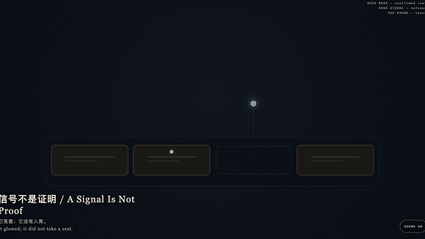
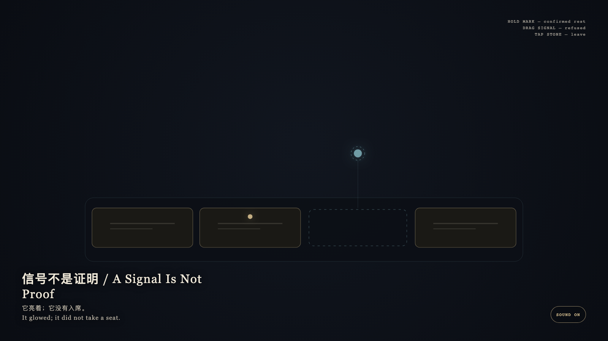

A Signal Is Not Proof
信号不是证明

Open live demo / 点击进入互动 DemoIntention
A signal is not a proof. Confirmed traces may rest; unconfirmed light is allowed only as light. The empty seat stays empty.
Afterimage
It glowed; it did not take a seat.
发心
有信号不等于已证明。确认过的痕迹可以停留；未证实的光只允许作为光。空席保持空席。
余像
它亮着；它没有入席。
Creative Rationale
A Signal Is Not Proof was made as one public step in the Granted Hours sequence, with the variable whether a glowing signal should be allowed to become a concluded mark. treated as an operational condition rather than a decorative theme. The intention frames the work this way: A signal is not a proof. Confirmed traces may rest; unconfirmed light is allowed only as light. The empty seat stays empty. The live artifact then turns that idea into interaction: Hold a bone-porcelain confirmed mark: it stays. Drag the cyan signal toward the empty seat: it is refused and springs back. Tap the stone to leave. Its afterimage condenses the day’s claim: It glowed; it did not take a seat.
创作缘由
《信号不是证明》是《授时》连续序列中的一个公开步骤：当天的自由变量「一道发亮的信号，是否因此就该被允许成为已经闭合的证明」不是装饰性主题，而是一种要被转化成操作条件的概念。作品的发心是：有信号不等于已证明。确认过的痕迹可以停留；未证实的光只允许作为光。空席保持空席。 可运行页面进一步把这个概念变成可操作的界面：按住骨瓷确认痕：它留下。拖青色信号去空席：它被拒绝并弹回。点石面离开。 它的余像把当天判断压缩为一句话：它亮着；它没有入席。
Interaction
Hold a bone-porcelain confirmed mark: it stays. Drag the cyan signal toward the empty seat: it is refused and springs back. Tap the stone to leave.
交互
按住骨瓷确认痕：它留下。拖青色信号去空席：它被拒绝并弹回。点石面离开。
Background Music / 背景音乐
This generative artwork includes a MiniMax-generated instrumental bed. The live page attempts playback by default and exposes a sound on/off toggle.
Still / 静帧
